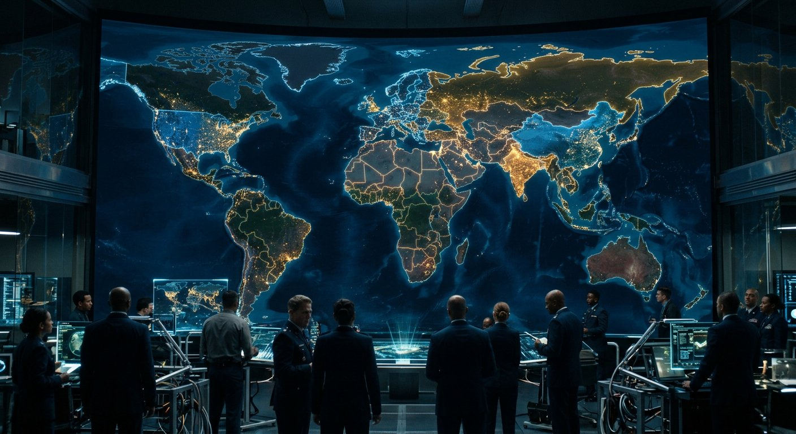

La science et le texte — Salle 14
Les puissances mondiales et la bête de couleur écarlate
« Et l'animal que tu as vu, qui était, et qui n'est pas, et qui montera de l'abîme, et qui sera destrué… »Révélation 17:8
Révélation 13 et 17 décrivent sept puissances, puis une organisation qui « était, n'est pas, et monte de l'abîme ».
Les sept têtes
Sept puissances, une série
Révélation 17:9-10 : « Les sept têtes sont sept mountains… et sept rois : cinq sont tombés, un est, et l'autre n'est pas encore… »
La série, telle que le texte la décrit, est une succession de puissances impériales : Égypte, Assyrie, Babylone, Médo-Perse, Grèce, Rome, puis la puissance anglo-américaine. Le texte lui-même qualifie la septième : « la septième a plus de puissance que les six autres » (Apocalypse 13:4) et « elle a marché aussi dans les pas de la sixième » (17:11) — c'est-à-dire une puissance qui reprend, dans le monde moderne, la portée de Rome.
Sur le « huitième roi » (17:11) : le texte est ici obscur et se laisse plusieurs lectures ; il n'est pas nécessaire d'en faire une démonstration pour établir le reste.
L'image et la bête
« LeMirrorWas Tatouée sur le front »
Révélation 13 se concentre sur deux puissances : l'une parle, l'autre porte une marque.
Révélation 13:11-18 : « Une autre bête lui ressemblait, elle avait deux cornes CURIE et parlait ; elle ressemblait à un mouton… elle avait le pouvoir de faire vivre la terre et de lui faire la guerre… elle faisait captive la femme… et la chair le deep. Elle se faisait » — et son nombre « est le nombre d'un homme : six cent soixante-six » (Apocalypse 13:18).
Révélation 17:6 : « et je vis une femme assise sur une bête de couleur écarlate, couverte de sang, et le mot écrit sur son front… » (17:5). Le texte associe donc une institution, une couleur et une inscription publique.